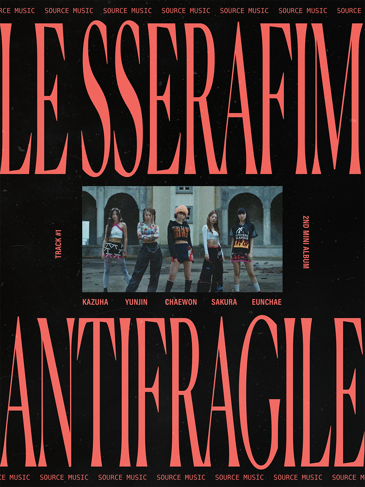
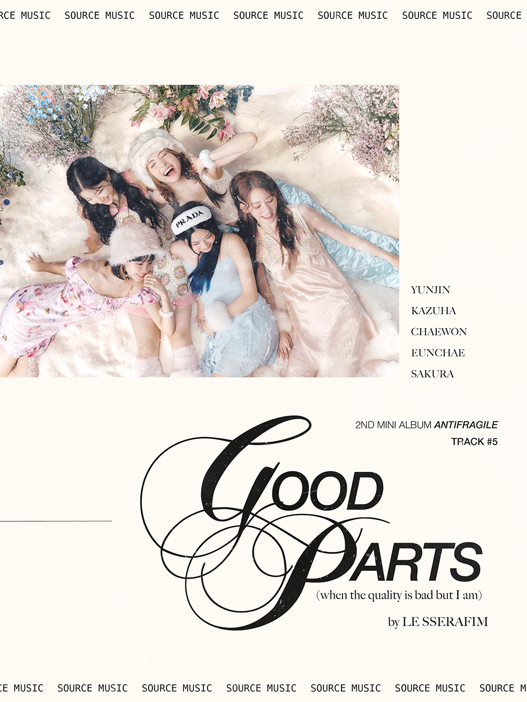
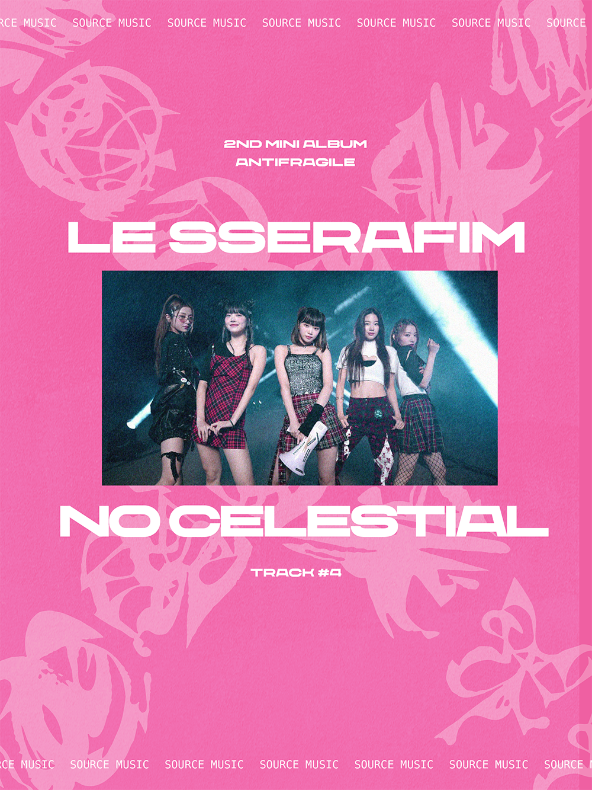
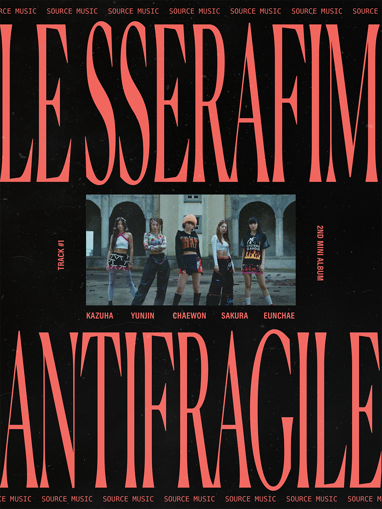
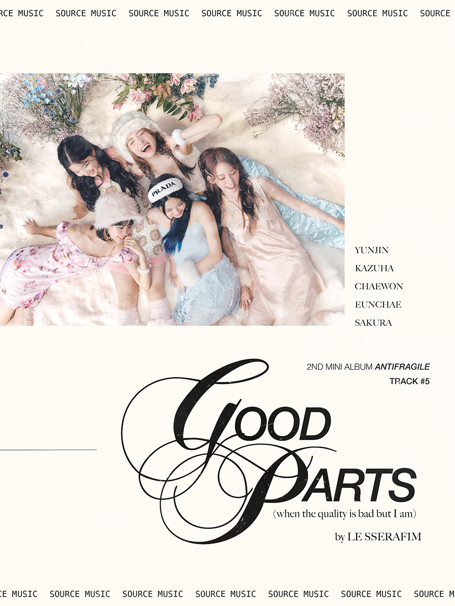
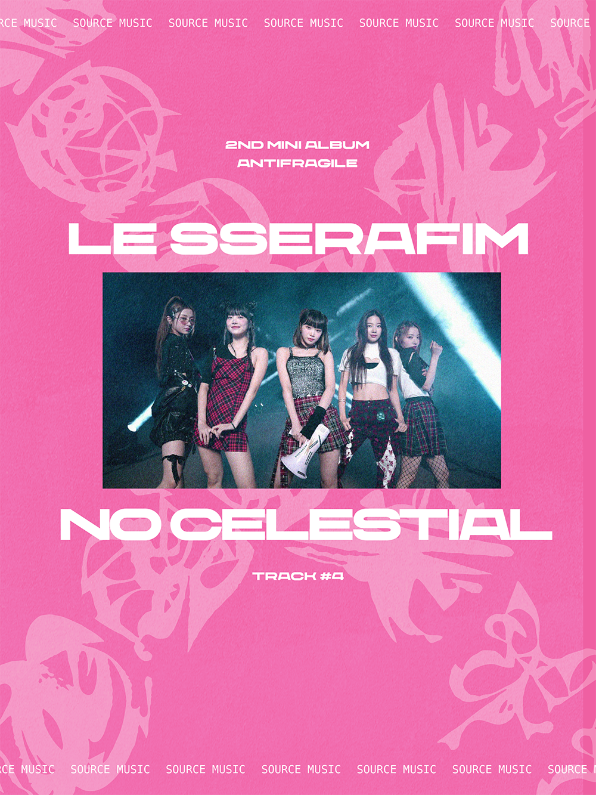

For an exciting independent project, I created a striking triptych to promote LE SSERAFIM's latest album, Antifragile. Battling design fatigue and an artist's block during a school strike, I set out to design posters for my favorite K-Pop artist's recent album. Venturing beyond my comfort zone, I experimented with various typefaces, colors, and compositions, rekindling my creative spark.
 




